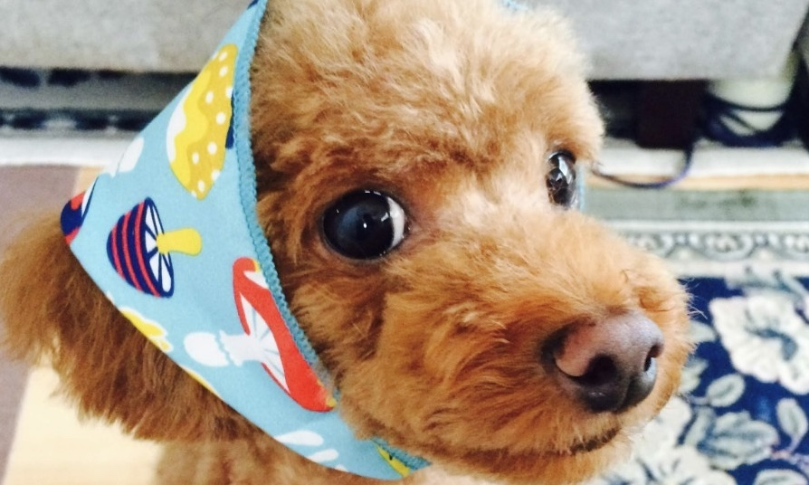
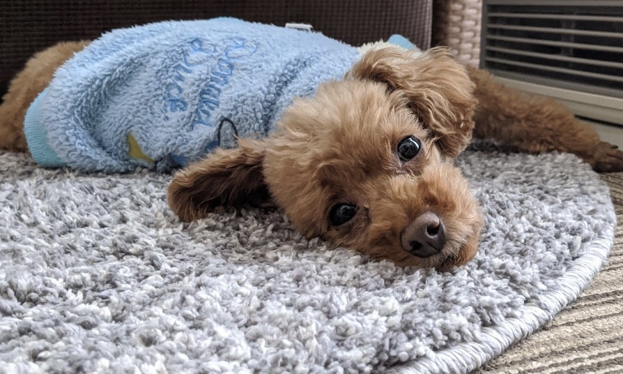

<!DOCTYPE html>
<html lang="ja">
<head>
    <meta charset="UTF-8">
    <meta name="viewport" content="width=device-width, initial-scale=1.0">
    <title>Choko's Site</title>
    <!--CSS読み込み-->
    <link rel="stylesheet" href="css/reset.css">
    <link rel="stylesheet" href="css/style.css">
    <link rel="stylesheet" href="css/responsive.css">
    <link rel="stylesheet" href="https://cdnjs.cloudflare.com/ajax/libs/Swiper/5.3.7/css/swiper.min.css">
</head>
<body>
    <!--all-container-->
    <div class="all-container">
        <!--nav-container-->
        <div class="nav-container">
            <ul class="nav-list">
                <li class="gnav home"><a href="#home">Home</a></li>
                <li class="gnav about"><a href="#about">About</a></li>
                <li class="gnav gallely"><a href="#gallely">Gallely</a></li>
                <li class="gnav more"><a href="#more">More</a></li>
            </ul>
        </div>
        <!--home-wrapper-->
        <div class="home-wrapper" id="home">
            <div class="container">
                <h1 class="title-name">
                    <span>ち</span>
                    <span>ょ</span>
                    <span>こ</span>
                    <span>ち</span>
                    <span>ゃ</span>
                    <span>ん</span>
                    <span>の</span>
                    <span>き</span>
                    <span>ろ</span>
                    <span>く</span>
                </h1>
                
                
                <div class="top-imgbox">
                    
                </div>
            </div>
        </div>
        <!--about-wrapper-->
        <div class="about-wrapper" id="about">
            <div class="container">
                
                <h2 class="about-title anim">About</h2>
                <p class="about-description anim">ちょこちゃんについて</p>
                <div class="profile anim">
                    <div class="profile-item">
                        <p class="profile-property">犬種</p>
                        <p class="profile-value">トイプードル</p>
                    </div>
                    <div class="profile-item">
                        <p class="profile-property">名前</p>
                        <p class="profile-value">ちょこ</p>
                    </div>
                    <div class="profile-item">
                        <p class="profile-property">性別</p>
                        <p class="profile-value">男の子 ♂</p>
                    </div>
                    <div class="profile-item">
                        <p class="profile-property">性格</p>
                        <p class="profile-value">お調子者・怖がり</p>
                    </div>
                    <div class="profile-item">
                        <p class="profile-property">チャームポイント</p>
                        <p class="profile-value">目</p>
                    </div>
                </div>
            </div>
        </div>
        <!--gallely-wrapper-->
        <div class="gallely-wrapper" id="gallely">
            <div class="container">
                
                <h2 class="gallely-title anim">Gallely</h2>
                <p class="gallely-description anim">ちょこギャラリー</p>
                <div class="photo-gallely anim">
                    
                    
                    
                    
                    
                    
                    
                    
                    
                </div>
                <div class="movie-gallely anim">
                    <video src="movie/movie1.mov" alt="ギャラリー動画1" controls></video>
                    <video src="movie/movie2.mov" alt="ギャラリー動画2" controls></video>
                </div>
            </div>
        </div>
        <!--more-wrapper-->
        <div class="more-wrapper" id="more">
            <div class="container">
                
                <h2 class="more-title anim">More</h2>
                <p class="more-description anim">もっと知ってほしい!</p>
                <div class="from-owner anim">
                    <p class="owner-title">飼い主より</p>
                    <p class="owner-content">ちょこちゃんは私が小学生のときに飼い始め、ずっと一緒に暮らしてきました。<br>
                    散歩に連れていくと他の犬に吠えることもよくありますが、我が家の癒しの存在です。</p>
                </div>
                <div class="faq anim">
                    <p class="faq-title">ちょこちゃんの一問一答</p>
                    <div class="faq-container">
                        <section class="q1">
                            <div class="question"><a href="#">出会ったきっかけは？</a></div>
                            <div class="answer">家族でペットショップへ出かけたときに一目惚れしたのがきっかけです。</div>
                        </section>
                        <section class="q2">
                            <div class="question"><a href="#">好きなことは？</a></div>
                            <div class="answer">ボール遊びとお昼寝が好きです。</div>
                        </section>
                        <section class="q3">
                            <div class="question"><a href="#">苦手なことは？</a></div>
                            <div class="answer">暗いところが苦手です。</div>
                        </section>
                        <section class="q4">
                            <div class="question"><a href="#">覚えているしつけは？</a></div>
                            <div class="answer">お手、おすわり、おかわりなどです。</div>
                        </section>
                        <section class="q5">
                            <div class="question"><a href="#">よくする仕草は？</a></div>
                            <div class="answer">両足立ちをよくします。</div>
                        </section>
                    </div>
                </div>
            </div>
        </div>
        <!--last-wrapper-->
        <div class="last-wrapper">
            <div class="container">
                
                <p class="last-message anim">見てくれてありがとうだワン！</p>
                <div class="swiper-container anim">
                    <div class="swiper-wrapper">
                        <div class="swiper-slide"></div>
                        <div class="swiper-slide"></div>
                        <div class="swiper-slide"></div>
                        <div class="swiper-slide"></div>
                        <div class="swiper-slide"></div>
                        <div class="swiper-slide"></div>
                    </div>
                    <div class="swiper-pagination"></div>
                </div>
            </div>
        </div>
        <!--footer-->
        <footer>
            <p>Copyright<span> &copy; </span> Choko's Site All Rights Reserved.</p>
        </footer>
    </div>
    <!--JS読み込み-->
    <script src="https://cdnjs.cloudflare.com/ajax/libs/Swiper/5.3.7/js/swiper.min.js"></script>
    <script src="https://ajax.googleapis.com/ajax/libs/jquery/3.5.1/jquery.min.js"></script>
    <script type="text/javascript" src="js/main.js"></script>
</body>
</html>